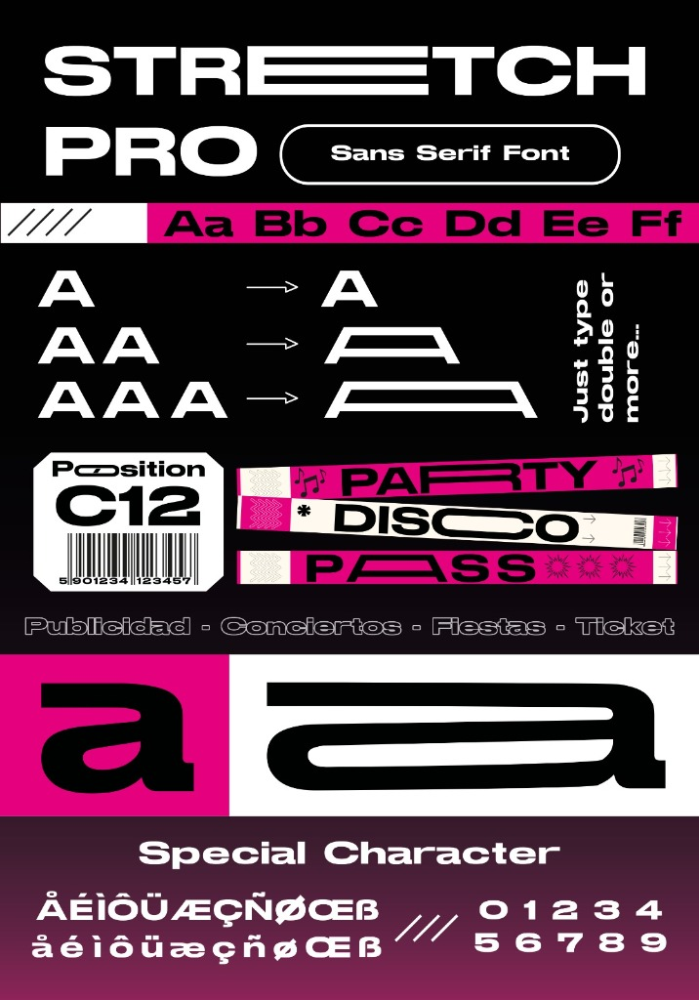
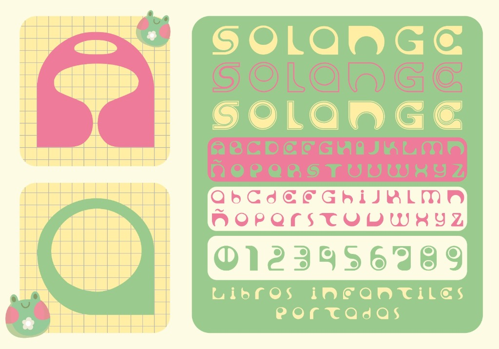
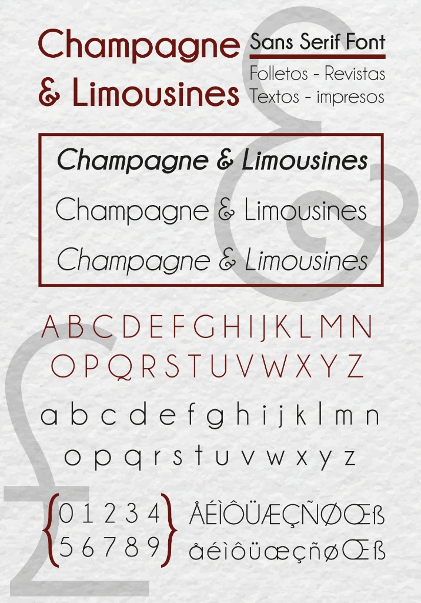
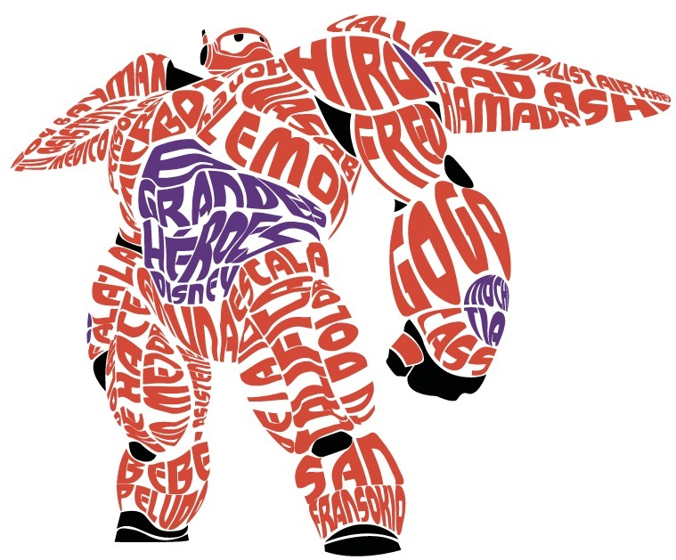

Objetivo
Explorar la tipografía como elemento principal de comunicación visual, experimentando con recursos de composición y dirección de arte para desarrollar propuestas gráficas que transmitan diferentes conceptos, estilos y sensaciones.

Serie de composiciones gráficas experimentales que exploran las posibilidades expresivas de diferentes familias tipográficas. A través del uso de la forma, el color, la escala, el contraste y la jerarquía visual, cada pieza construye un lenguaje gráfico propio, destacando la personalidad y las características de cada tipografía.
Explorar la tipografía como elemento principal de comunicación visual, experimentando con recursos de composición y dirección de arte para desarrollar propuestas gráficas que transmitan diferentes conceptos, estilos y sensaciones.
Desarrollo de composiciones tipográficas con identidades visuales diferenciadas, aplicando criterios de jerarquía, equilibrio, contraste y expresión gráfica. El ejercicio permitió fortalecer habilidades de composición editorial, experimentación visual y manejo tipográfico.
Cuatro acercamientos distintos al carácter, ritmo y expresividad de la letra.


